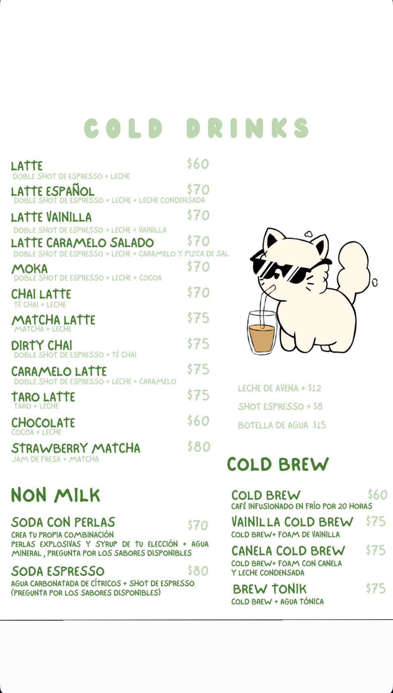

Bebidas de temporada

El otoño llego a Foam
¿Ya sabes cuál vas a probar primero?
Presentamos nuestras 4 bebidas de temporada, creadas para acompañar esta epoca del año.

Bebidas de Verano
Dos nuevas formas de disfrutar la temporada. ¿Con cuál vas a empezar?
Esta temporada estrenamos dos bebidas pensadas para disfrutar el verano con sabores frescos, frutales y el toque de café que tanto nos gusta.

Los Bebidas de primavera
Refrescantes, tropicales y perfectas para esta temporada. ¡Ven a probarlas!
Mango matcha suave con jam de mango natural hecho en casa y cold from cremoso de mango. Brew Mango, cold brew con agua tónica y jam de mango natural hecho en casa.

Menú
Los alimentos son son preparados al momento agradecemos tu paciencia.

Ubicación
Súper cerquita de C.U. Puebla.
C. 63-E oTE. 1439, vILLA uNIVERSITARI, 72589